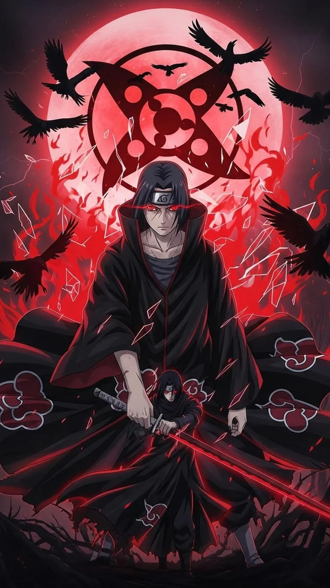

Naruto Shippuden Part 5: Seasons 6-7 (Episodes 113-151) - Every Episode Explained

Last updated: 20 October 2026
This is Part 5 of the complete Naruto Shippuden episode-by-episode guide, covering Seasons 6 and 7 - Episodes 113 to 151. It contains two of the most important stretches in the entire series: the Itachi Pursuit Mission and the Fated Battle Between Brothers, with the Kakashi Gaiden flashback tucked in the middle.
At a glance
- Episodes: 113-151 (39 episodes)
- Season 6: Itachi Pursuit Mission + Kakashi Gaiden + Fated Battle Between Brothers - manga canon
- Season 7: Six-Tails Unleashed - filler
- Aired: 11 June 2009 - 11 March 2010
- Season 6 score: 10/10 · Season 7 score: 5/10
Season 6 is the best season of Shippuden and it is not close. It contains Jiraiya's final mission, the Sasuke-Itachi fight, the Kakashi Gaiden flashback and the truth about Itachi - four of the biggest moments in the franchise, back to back. Season 7 is eight filler episodes that nobody needed. Watch 113 to 143, then skip to 152.
Every episode explained
Episode 113: The Serpent's Pupil
Orochimaru, still weakened, is looked after by Kabuto while Sasuke trains. Sasuke begins to assemble a team - the people who will become Taka.
Note: A calm-before-the-storm episode that quietly sets up the rest of the season.
Episode 114: Eye of the Hawk
Sasuke approaches Suigetsu and frees him. The tone is set: this is a colder, more calculating Sasuke than the one we last saw at the Tenchi Bridge.
Note: The best introduction of the arc.
Episode 115: Zabuza's Blade
Sasuke recruits Karin, and Suigetsu goes after Zabuza's sword. The team starts to take shape.
Note: A nice callback to Part 1 of the original series.
Episode 116: Guardian of the Iron Wall
Sasuke goes after Jugo, who is locked up for a reason - his rages are uncontrollable.
Note: Jugo is the most interesting of the new characters.
Episode 117: Jugo of the Northern Hideout
Sasuke persuades Jugo to join him, using Kimimaro's name. Team Taka is now complete.
Note: The team-building arc closes cleanly.
Episode 118: Formation!
Sasuke names his team Taka - 'hawk' - and sets them on a single goal: finding Itachi. Konoha simultaneously starts its own hunt for Itachi.
Note: Two hunts begin at once, and the season's engine starts.
Episode 119: Kakashi Chronicles: A Boy's Life on the Battlefield, Part 1
A flashback to the Third Great Ninja War, when Kakashi was a young jonin and Obito was his teammate. Kakashi's father's story is told.
Note: Kakashi Gaiden is one of the best pieces of storytelling in the whole series.
Episode 120: Kakashi Chronicles: A Boy's Life on the Battlefield, Part 2
Obito's death and the origin of Kakashi's Sharingan. It reframes everything you know about Kakashi.
Note: Essential. Do not skip these two episodes.
Episode 121: Assemble
Back in the present, Naruto, Sakura, Sai, Yamato and Kakashi prepare to move against Itachi.
Note: Sets the pieces in place.
Episode 122: The Hunt
Both hunts converge. Sasuke's team and Konoha's team are chasing the same man for completely different reasons.
Note: Good tension, well paced.
Episode 123: Clash!
The first real fights of the arc break out, and the Akatsuki's remaining members move.
Note: Action picks up sharply here.
Episode 124: Art
Deidara faces Sasuke. Deidara's art-versus-genius conflict comes to a head.
Note: Deidara's last fight, and he goes out his own way.
Episode 125: Disappearance
Deidara's final attack. Sasuke survives, barely, by a method that becomes important later.
Note: A big, loud set-piece.
Episode 126: Twilight
The fallout. Tobi is revealed to be far more than he appears.
Note: The first real hint about Tobi.
Episode 127: Tales of a Gutsy Ninja ~Jiraiya Ninja Scroll~ Part 1
Jiraiya's past is told, including how he met Tsunade and Orochimaru and what the Toad Sage told him about a child of prophecy.
Note: Quietly one of the most important episodes in the series.
Episode 128: Tales of a Gutsy Ninja ~Jiraiya Ninja Scroll~ Part 2
The prophecy thread continues, and Jiraiya decides to chase the Akatsuki's leader himself.
Note: Sets up the tragedy that follows.
Episode 129: Infiltrate! The Village Hidden in the Rain
Jiraiya infiltrates Amegakure alone and finds the organisation that runs it.
Note: Tense, patient build-up.
Episode 130: The Man Who Became God
Jiraiya learns who Pain is, and the reveal connects back to his own past.
Note: The reveal lands exactly as it should.
Episode 131: Honored Sage Mode!
Jiraiya enters Sage Mode and fights Pain for the first time.
Note: The animation in this fight is a step up from everything before it.
Episode 132: In Attendance, the Six Paths of Pain
The six Paths of Pain are explained, and Jiraiya works out the truth about them.
Note: The best-constructed fight of the arc.
Episode 133: The Tale of Jiraiya the Gallant
Jiraiya loses. He dies sending one final coded message back to Konoha.
Note: Widely considered the best episode in all of Naruto Shippuden. It earns that.
Episode 134: Banquet Invitation
Itachi and Sasuke finally meet. Before the fight, Itachi does something unexpected with Naruto.
Note: A short, strange episode that pays off much later.
Episode 135: The Longest Moment
The Sasuke versus Itachi fight begins - a battle fought almost entirely on genjutsu.
Note: Slow on purpose, and the payoff justifies it.
Episode 136: The Light & Dark of the Mangekyo Sharingan
Itachi's Mangekyo abilities are laid out, including Tsukuyomi and Amaterasu.
Note: The most technical fight in the series.
Episode 137: Amaterasu!
Sasuke breaks out of Tsukuyomi with sheer will, and Itachi's own techniques start to take a toll on him.
Note: Sasuke's best moment in the arc.
Episode 138: The End
The fight ends. Itachi walks toward Sasuke, taps his forehead, and dies.
Note: One of the most famous scenes in anime.
Episode 139: The Mystery of Tobi
Tobi reveals himself as 'Madara Uchiha' and tells Sasuke the story of the Uchiha clan.
Note: The reveal that changes the entire series.
Episode 140: Fate
Sasuke learns the truth about Itachi, and it breaks him. He renames his team and changes his goal entirely.
Note: The emotional core of the season.
Episode 141: Truth
Sasuke sets his sights on Konoha itself. The season's whole direction changes.
Note: A hard turn that sets up everything after.
Episode 142: Battle of Unraikyo
The Eight-Tails and Killer B are introduced, and Sasuke's team is sent after him.
Note: Introduces one of the best characters in the series.
Episode 143: The Eight Tails Vs. Sasuke
Sasuke fights Killer B and loses badly. His team barely escapes with their lives.
Note: A great reality check - Sasuke is not as strong as he thinks.
Episode 144: Wanderer
Naruto is told about Jiraiya's death. He takes it badly, and Iruka and Shikamaru try to reach him.
Note: A quiet, heavy episode.
Episode 145: Successor of the Forbidden Jutsu
A filler arc begins about a forbidden technique and the people fighting over it.
Note: The tone shift is jarring after the Itachi arc.
Episode 146: The Successor's Wish
The filler arc continues, exploring the would-be successor of the technique.
Note: Watchable, but skippable.
Episode 147: Rogue Ninja's Past
The backstory of the rogue ninja tied to the technique is told.
Note: Character work is fine, the plot is thin.
Episode 148: Heir to Darkness
The antagonist's plan comes together and the arc moves toward its fights.
Note: Standard filler pacing.
Episode 149: Separation
Alliances break apart and the characters are forced to choose sides.
Note: The arc's better half.
Episode 150: The Forbidden Jutsu Released
The forbidden technique is used, and the arc reaches its climax.
Note: A decent action finish.
Episode 151: Master and Student
The arc closes. Naruto returns to training and to the question of what he is fighting for.
Note: A soft landing before the biggest arc in the series.

Part 5 verdict
Episodes 129 to 141 are the peak of Naruto Shippuden. The Jiraiya infiltration and death, the Sasuke-Itachi fight, and the truth about Itachi form a run of episodes that most long-running anime never manage even once. Episode 133 in particular is the episode people point to when they argue Shippuden is better than the original series.
Episodes 144 to 151 are the opposite. The Six-Tails arc is filler, it arrives immediately after the biggest emotional moment in the show, and the tonal whiplash is severe. Skip it.
Overall: 9/10. Essential viewing with a filler tail you can ignore.

Next in this series
Continue the episode-by-episode guide with the next part.